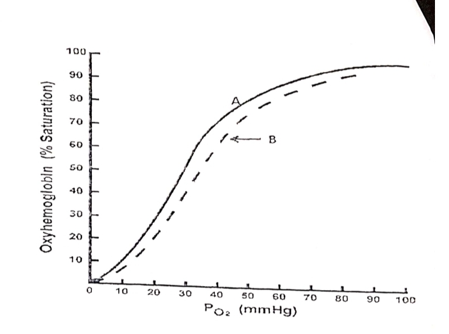
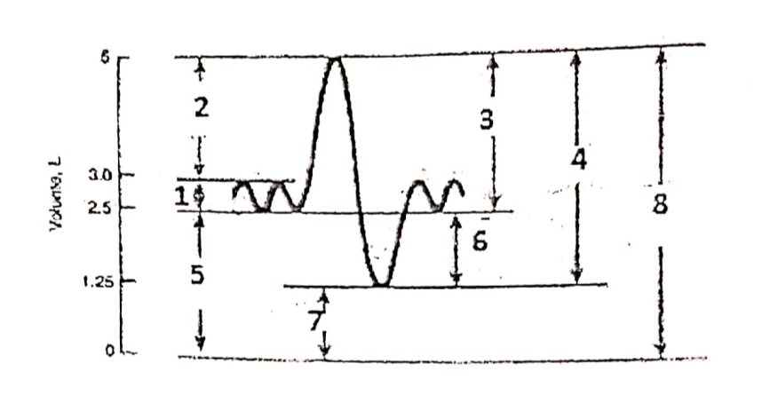

Multiple Choice Questions
80
Select the best answer for each question, then click Submit All MCQs below.
Your Score
0%
Review the feedback below each question.
Section B – Structured and Short Answer Questions
30 marks
Write your answers in the boxes below. Click Show Answer to reveal a model answer.
Question B1 – Oxygen Dissociation Curve

a) State any four causes of shift of curve A to B [2 marks]
1. Increased 2,3‑DPG (e.g., chronic hypoxia, anaemia).
2. Increased H⁺ (acidosis, decreased pH).
3. Increased CO₂ (Bohr effect).
4. Increased temperature.
These factors decrease haemoglobin's affinity for O₂, shifting the curve to the right (A → B).
2. Increased H⁺ (acidosis, decreased pH).
3. Increased CO₂ (Bohr effect).
4. Increased temperature.
These factors decrease haemoglobin's affinity for O₂, shifting the curve to the right (A → B).
b) What is the P50 in curve A and curve B? [2 marks]
P50 is the partial pressure of O₂ at which haemoglobin is 50% saturated. In curve A (normal), P50 ≈ 26–27 mmHg. In curve B (right‑shifted), P50 is higher, ≈ 30–32 mmHg.
c) Applied significance of the flat portion of the curve? [2 marks]
The flat upper portion (above 60 mmHg) ensures that even if alveolar PO₂ falls moderately (e.g., at high altitude or mild lung disease), haemoglobin remains highly saturated. This provides a safety margin for O₂ transport, so arterial O₂ content is well maintained despite fluctuations in PO₂.
d) Describe two factors that determine the amount of oxygen combined to hemoglobin [1 mark]
1. PO₂ (partial pressure of oxygen).
2. Haemoglobin concentration (and its affinity for O₂, affected by pH, CO₂, temperature, 2,3‑DPG).
2. Haemoglobin concentration (and its affinity for O₂, affected by pH, CO₂, temperature, 2,3‑DPG).
e) Describe two factors that determine the amount of gas dissolved in physical solution [1 mark]
1. Partial pressure of the gas.
2. Solubility coefficient of the gas in the liquid (Henry's law).
2. Solubility coefficient of the gas in the liquid (Henry's law).
Question B2 – Spirometry

a) Define label [1] in the diagram above and state its value [1 mark]
Label [1] = Tidal Volume (TV). It is the volume of air inhaled or exhaled during a normal quiet breath. Average value ≈ 500 mL (0.5 L).
b) i. What is labeled [4] in the diagram above? [0.5 mark]
Label [4] = Vital Capacity (VC).
ii. State its components and average normal value [1.5 marks]
VC = Tidal Volume (TV) + Inspiratory Reserve Volume (IRV) + Expiratory Reserve Volume (ERV). Average normal value ≈ 4.8 L (men), 3.5 L (women).
iii. Give 2 examples of lung diseases where [4] is decreased [1 mark]
1. Restrictive lung diseases (e.g., pulmonary fibrosis).
2. Neuromuscular disorders (e.g., myasthenia gravis, Guillain‑Barré).
2. Neuromuscular disorders (e.g., myasthenia gravis, Guillain‑Barré).
iv. Which lung capacities in the diagram cannot be measured by spirometry? Mention their representing number on the curve [1 mark]
Residual Volume (RV) – label [7]; Functional Residual Capacity (FRC) – label [6]; Total Lung Capacity (TLC) – label [8]. Spirometry cannot measure RV directly, so any capacity including RV cannot be measured.
v. Mention their values [1 mark]
RV ≈ 1.2 L; FRC ≈ 2.2–2.4 L; TLC ≈ 6.0 L (men), 4.8 L (women).
c) What is labeled [7] in the diagram? [1 mark]
Label [7] = Residual Volume (RV).
d) Mention two significances of the labeled [7] [2 marks]
1. Prevents alveolar collapse by maintaining positive intrapulmonary pressure at end‑expiration.
2. Allows continuous gas exchange between breaths, preventing extreme fluctuations in blood gases.
2. Allows continuous gas exchange between breaths, preventing extreme fluctuations in blood gases.
e) Define the label [6] in the diagram above [1 mark]
Label [6] = Functional Residual Capacity (FRC). It is the volume of air remaining in the lungs after a normal tidal expiration. FRC = ERV + RV.
Question B3 – Conducting System of the Heart
Draw a well‑labeled diagram of the conducting system of the heart [5 marks]
Model answer (diagram description):
Diagram should include: SA node (in right atrium near opening of superior vena cava), internodal pathways (anterior, middle, posterior), AV node (at lower interatrial septum), bundle of His (penetrating AV fibrous ring), right and left bundle branches, and Purkinje fibres ramifying in ventricular myocardium. Labels should indicate each component.
Question B4 – Cough Reflex
Covid infected patients show cough symptoms as a primary finding. Briefly explain the physiology of cough reflex in FOUR (4) steps [2 marks]
Model answer:
1. Irritation of cough receptors in the respiratory passages (larynx, trachea, bronchi) by irritants (e.g., mucus, inflammatory mediators).
2. Afferent impulses travel via vagus and glossopharyngeal nerves to the cough centre in the medulla.
3. Efferent impulses via vagus, phrenic, and spinal motor nerves cause: deep inspiration, closure of glottis, forceful contraction of expiratory muscles.
4. Glottis opens suddenly, resulting in explosive expulsion of air, carrying irritants out.
2. Afferent impulses travel via vagus and glossopharyngeal nerves to the cough centre in the medulla.
3. Efferent impulses via vagus, phrenic, and spinal motor nerves cause: deep inspiration, closure of glottis, forceful contraction of expiratory muscles.
4. Glottis opens suddenly, resulting in explosive expulsion of air, carrying irritants out.
Question B5 – Total Body Water
Emphasize four factors that affect total body water [2 marks]
Model answer:
1. Age – TBW decreases with age (higher in infants, lower in elderly).
2. Sex – males have higher TBW than females (more muscle mass).
3. Body fat – adipose tissue has low water content; obese individuals have lower TBW percentage.
4. Hormonal factors – ADH, aldosterone, and ANP influence water balance.
5. Disease states – e.g., dehydration, oedema, renal failure.
2. Sex – males have higher TBW than females (more muscle mass).
3. Body fat – adipose tissue has low water content; obese individuals have lower TBW percentage.
4. Hormonal factors – ADH, aldosterone, and ANP influence water balance.
5. Disease states – e.g., dehydration, oedema, renal failure.
Question B6 – Lung Compliance
State any TWO (02) factors that affect lung compliance [1 mark]
Model answer:
1. Surface tension – reduced by surfactant, increases compliance.
2. Elastic properties of lung tissue – elastin and collagen content; fibrosis decreases compliance.
3. Chest wall compliance – also contributes to overall compliance.
2. Elastic properties of lung tissue – elastin and collagen content; fibrosis decreases compliance.
3. Chest wall compliance – also contributes to overall compliance.
Section C – Clinical Scenarios
3 scenarios
Read each scenario carefully and answer the questions. Click Show Answer for model answers.
Scenario 1 – Neuromuscular Junction
Jack, a 23-year-old medical student visits his physician after experiencing "strange symptoms" for the last 8 months. He had severe eyestrain when he read for longer than 15 minutes. He became tired when he chewed his food, brushed his teeth, or dried his hair. He was evaluated by his physician. While awaiting the results, the physician initiated a trial of pyridostigmine, an acetylcholinesterase inhibitor. Jack immediately felt better while taking the drug; his strength returned to almost normal.
a) What is the most likely neuromuscular condition that Jack is suffering from? [1 mark]
Myasthenia gravis.
b) With respect to neuromuscular transmission, what is a quantum? [1 mark]
A quantum is the amount of acetylcholine released from a single synaptic vesicle. Each quantum produces a miniature end‑plate potential (MEPP) of about 0.5–1 mV.
c) Why is the neuromuscular junction said to have a high safety margin? [1 mark]
Because the amount of ACh released normally far exceeds the minimum needed to depolarize the muscle fibre to threshold. Many more receptors are activated than necessary, so transmission succeeds even if some receptors are blocked or ACh release is reduced.
d) Mention two factors that account for delay in neuromuscular transmission [1 mark]
1. Time taken for Ca²⁺ influx and neurotransmitter release.
2. Diffusion time of ACh across the synaptic cleft.
3. Time for ACh binding and receptor activation.
2. Diffusion time of ACh across the synaptic cleft.
3. Time for ACh binding and receptor activation.
e) Mention the cholinergic receptor type located on the postsynaptic membrane of the synaptic cleft [0.5 mark]
Nicotinic acetylcholine receptor (nAChR).
f) What destroys the acetylcholine that diffuses away from the endplate into the blood stream and other tissues? [0.5 mark]
Butyrylcholinesterase (pseudocholinesterase) in plasma and tissues.
g) What is the implication of the blockage by the trial drug? [1 mark]
Pyridostigmine inhibits acetylcholinesterase, thereby increasing ACh concentration in the synaptic cleft. This improves neuromuscular transmission in myasthenia gravis, confirming the diagnosis.
h) What is most likely to be seen in a biopsy sample of intercostal muscles of the patient in this question? [1 mark]
Type II fibre atrophy (or generalised muscle atrophy) due to decreased neuromuscular transmission and disuse.
i) Why would removal of the thymus gland be beneficial to this patient? [2 marks]
The thymus is often hyperplastic or contains thymoma in myasthenia gravis. It is involved in the production of autoantibodies against nicotinic ACh receptors. Thymectomy reduces the source of autoantibody production and often improves symptoms.
j) Mention the site of action of botulinum toxin and the type of muscle paralysis it causes [1 mark]
Botulinum toxin acts presynaptically at the neuromuscular junction, preventing release of ACh. It causes flaccid paralysis.
Scenario 2 – Deep Venous Thrombosis
A male patient aged 70 years, suffered from fracture at the neck femur of the left side. He was operated for the fracture. After the operation, he was unable to move even in bed although he was encouraged to move. Three days after the operation, the doctor observed swelling in his left leg and was diagnosed as deep venous thrombosis.
a) Mention two causes of occurrence of deep venous thrombosis in this patient [1 mark]
1. Venous stasis (immobility after surgery).
2. Endothelial injury (surgical trauma).
3. Hypercoagulability (post‑operative state, increased clotting factors).
2. Endothelial injury (surgical trauma).
3. Hypercoagulability (post‑operative state, increased clotting factors).
b) The patient received heparin three times daily and dicumarol once daily. What is the mode of action of dicumarol? [2 marks]
Dicumarol (warfarin) inhibits vitamin K epoxide reductase, preventing the regeneration of reduced vitamin K. This reduces the synthesis of vitamin K‑dependent clotting factors: II, VII, IX, X, and proteins C and S.
c) How is heparin administered? [1 mark]
Heparin is administered intravenously (IV) or subcutaneously. It is not effective orally.
d) After two days, heparin treatment was stopped and dicumarol treatment continued. The efficacy of dicumarol treatment be adjusted by testing which hemostatic function? [1 mark]
Prothrombin time (PT) / INR.
e) Ten days later, the patient suffers from severe bleeding from a slight cut in the face. The clotting of blood does not occur. This was diagnosed as a complication of dicumarol therapy. What substance can be given to the patient in this case? [1 mark]
Vitamin K (phytomenadione) or fresh frozen plasma (FFP) if urgent.
f) Give one reason each for the prolonged bleeding time in the following conditions
1. Vitamin C deficiency – defective collagen synthesis → capillary fragility.
2. Deficiency of von Willebrand factor – impaired platelet adhesion to subendothelium.
3. Prolonged use of aspirin – inhibits cyclooxygenase → decreased thromboxane A2 → impaired platelet aggregation.
4. Purpura – decreased platelet number or function.
2. Deficiency of von Willebrand factor – impaired platelet adhesion to subendothelium.
3. Prolonged use of aspirin – inhibits cyclooxygenase → decreased thromboxane A2 → impaired platelet aggregation.
4. Purpura – decreased platelet number or function.
g) Briefly state two properties of the normal intact endothelium that makes it to limit hemostatic reactions [2 marks]
1. It provides a smooth, non‑thrombogenic surface.
2. It secretes prostacyclin (PGI₂) and nitric oxide (NO), which inhibit platelet aggregation and promote vasodilation.
3. It expresses heparan sulfate and thrombomodulin, which inactivate thrombin and activate protein C.
2. It secretes prostacyclin (PGI₂) and nitric oxide (NO), which inhibit platelet aggregation and promote vasodilation.
3. It expresses heparan sulfate and thrombomodulin, which inactivate thrombin and activate protein C.
Scenario 3 – Circulatory Shock (Mrs. Mulenga)
Martha Mulenga is a 60-year-old widow who was rushed to the Kitwe Teaching Hospital emergency room last evening by her sister. Early in the day, Mrs. Mulenga had seen bright red blood in her stool, which she attributed to hemorrhoids. She continued with her daily activities: she cleaned her house in the morning, had lunch with friends. However, the bleeding continued all day, and by dinnertime, she could no longer ignore it. Mrs. Mulenga does not smoke or drink alcoholic beverages. She takes aspirin, as needed, for arthritis, sometimes up to 10 tablets daily. In the emergency room, Mrs. Mulenga was light-headed, pale, cold, and very anxious. Her hematocrit was 29% (normal for women, 36 to 46%).
The data below shows Mrs. Mulenga's blood pressure and heart rate in the lying (supine) and upright (standing) positions:
The data below shows Mrs. Mulenga's blood pressure and heart rate in the lying (supine) and upright (standing) positions:
Parameter Lying Down (Supine) Upright (Standing)
Blood pressure 90/60 75/45
Heart rate 105 beats/min 135 beats/min
Blood pressure 90/60 75/45
Heart rate 105 beats/min 135 beats/min
a) i. Define circulatory shock [1 mark]
Circulatory shock is a state of inadequate tissue perfusion resulting in cellular hypoxia and organ dysfunction. It is characterised by a critical reduction in effective circulating blood volume or cardiac output relative to tissue demands.
ii. List the various forms of shock [2 marks]
1. Hypovolaemic shock (haemorrhagic, burns, dehydration).
2. Cardiogenic shock (myocardial infarction, arrhythmias).
3. Distributive shock (septic, anaphylactic, neurogenic).
4. Obstructive shock (pulmonary embolism, cardiac tamponade).
2. Cardiogenic shock (myocardial infarction, arrhythmias).
3. Distributive shock (septic, anaphylactic, neurogenic).
4. Obstructive shock (pulmonary embolism, cardiac tamponade).
b) After the gastrointestinal blood loss, what sequence of events led to Mrs. Mulenga's decreased arterial pressure [2 marks]
Blood loss → decreased venous return → decreased ventricular filling (preload) → decreased stroke volume (Frank‑Starling mechanism) → decreased cardiac output → decreased arterial pressure. Baroreceptor reflex attempts to compensate by increasing heart rate and vasoconstriction, but the loss is too great.
c) Why was Mrs. Mulenga's arterial pressure lower in the upright position than in the lying (supine) position? [1 mark]
In the upright position, gravity causes blood pooling in the lower extremities, reducing venous return and cardiac output. The compensatory baroreceptor reflexes are impaired due to hypovolaemia, so blood pressure falls further.
d) i. What is hematocrit? [1 mark]
Hematocrit is the percentage of blood volume occupied by red blood cells (packed cell volume, PCV).
ii) Why was Mrs. Mulenga's hematocrit decreased? [1 mark]
She suffered acute blood loss, which initially reduces the red cell mass. Later, compensatory fluid shifts from interstitial to intravascular space dilute the remaining red cells, further lowering the haematocrit.
iii) Why was this decrease potentially dangerous? [1 mark]
Decreased haematocrit reduces oxygen‑carrying capacity, worsening tissue hypoxia. It also indicates significant blood loss, which can lead to hypovolaemic shock and organ failure.
e) Why was her skin pale and cold? [1 mark]
Sympathetic vasoconstriction diverts blood from the skin to vital organs. Reduced skin perfusion causes pallor and coldness.